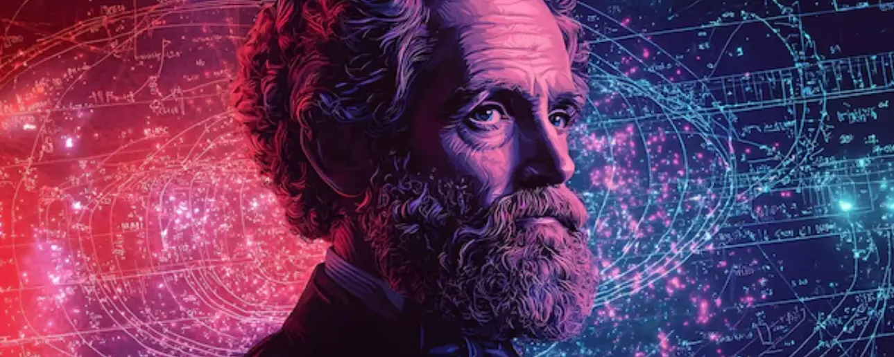

A Física da Manifestação: Eletromagnetismo, Lei da Atração e a Escala Hawkins

Não pode ler agora?
Experimente a versão em áudio:
Você já parou para pensar que a sua mente e as suas emoções funcionam como uma estação de rádio, transmitindo e recebendo sinais o tempo todo?
A ciência e a espiritualidade parecem convergir na ideia de que tudo o que pensamos e sentimos gera uma vibração, moldando a nossa realidade de forma constante.
Neste artigo, vamos explorar como os princípios do Eletromagnetismo se relacionam com a Lei da Atração e como você pode usar a Escala Hawkins como um guia prático para dominar sua frequência vibracional.
1. A Base Científica: O Eletromagnetismo e as Equações de Maxwell
No mundo físico, o eletromagnetismo é regido pelas Equações de Maxwell, um conjunto de leis que descrevem como cargas e correntes elétricas geram campos elétricos e magnéticos.
Um dos conceitos mais fascinantes aqui é que um campo elétrico que varia no tempo gera um campo magnético, e vice-versa, criando ondas eletromagnéticas que se propagam pelo espaço.
Essas ondas, que incluem a própria luz, são formas de energia autossustentadas.
Se transportarmos esse conceito para o campo da consciência, podemos entender nossos pensamentos como impulsos elétricos e nossas emoções como a força magnética que "puxa" experiências para a nossa vida.
2. A Lei da Atração: Você é um Ímã Vivo
A Lei da Atração afirma que a energia que emitimos retorna para nós na mesma frequência.
Assim como na física clássica, onde as cargas interagem através de campos, a nossa "carga emocional" cria um campo de influência ao nosso redor.
- Mentalizar e Sentir: Não basta apenas desejar; é preciso alinhar o pensamento positivo com a crença de que algo já é seu.
- Vibração e Frequência: Padrões mentais baseados no medo ou na dúvida atraem resultados negativos, enquanto uma mentalidade confiante abre caminhos inesperados.
- Ação Alinhada: A manifestação exige que você aja de forma coerente com o que deseja conquistar, "vivendo" a realidade antes mesmo de ela se materializar fisicamente.
3. Guia de Vibrações: A Escala Hawkins da Consciência
Para dominar essas vibrações, o Dr. David Hawkins criou um mapa que associa níveis de consciência a valores numéricos e emoções específicas.
Essa escala serve como um "GPS vibracional" para identificarmos onde estamos e para onde precisamos ir:
| Categoria | Nível | Frequência | Descrição |
|---|---|---|---|
| Baixa Vibração (Abaixo de 200 hertz) |
Vergonha | 20 hertz | O nível mais baixo; paralisa o indivíduo e impede o aprendizado. |
| Culpa | 30 hertz | Gera vitimismo e projeção de frustrações no mundo externo. | |
| Apatia / Sofrimento | 50 / 75 hertz | Estados de ausência de esperança e tristeza profunda. | |
| Medo | 100 hertz | Gera insegurança e paralisa a alma humana. | |
| Raiva / Orgulho | 150 / 175 hertz | Embora tragam mais energia, ainda prendem a consciência ao ego e ao conflito. | |
| Ponto de Virada | Coragem | 200 hertz | Segundo Hawkins, este é o nível mínimo esperado para que a vida e a evolução continuem. É onde começamos a retomar nosso poder pessoal. |
| Alta Vibração (Rumo à Manifestação) |
Neutralidade / Otimismo | 250 / 310 hertz | A vida passa a ser vista como um desafio agradável e as crenças tornam-se flexíveis. |
| Aceitação / Perdão | 350 hertz | Onde ocorre a verdadeira transformação e a compreensão de responsabilidade pessoal. | |
| Amor | 500 hertz | Uma vibração poderosa onde a intuição se torna forte e agimos guiados por uma força maior. | |
| Alegria / Paz | 540 / 600 hertz | Estados de desapego e serenidade que neutralizam qualquer vibração baixa. | |
| Iluminação | 700–1000 hertz | O nível máximo, onde a individualidade se funde com a divindade. |
4. Como Dominar sua Frequência na Prática
Para mudar sua realidade, você deve conscientemente "elevar o dial" da sua vibração:
- Identifique sua base: Use a Escala Hawkins para reconhecer qual sentimento predomina no seu dia a dia.
- Limpeza emocional: Liberte-se de padrões de vitimização, ódio e dores passadas para modificar sua consciência.
- Use ferramentas de foco: Crie painéis de visualização (vision boards) e utilize mantras diários (como "Tudo vem a mim com facilidade, alegria e glória") para manter a mente sintonizada em frequências altas.
- Aja "como se": Mude seu mindset para viver como se seu desejo já fosse realidade, pois isso alinha sua energia ao campo do que você quer atrair.
Conclusão
Ao compreender que o seu mundo interno funciona sob leis vibracionais análogas ao eletromagnetismo, você deixa de ser uma vítima das circunstâncias. Elevar seu nível de consciência não transforma apenas a sua vida, mas contribui para a elevação da consciência global.
Escolha vibrar alto!